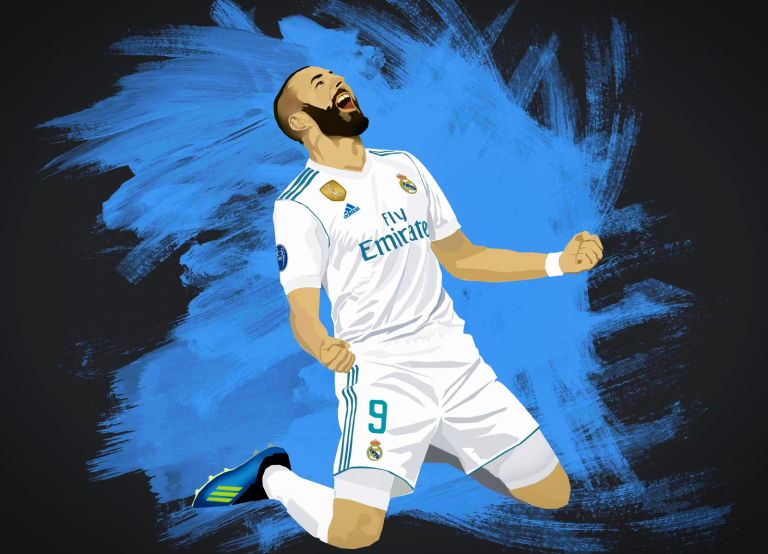
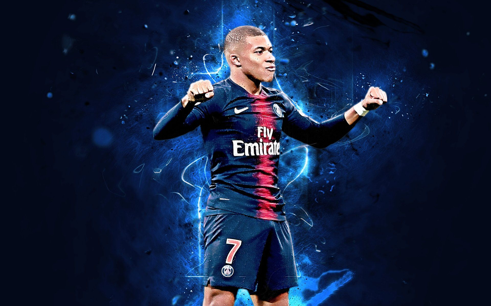

RECENT UPDATES!!! 
Benzema to lift the trophy for FC Real Madrid. The club won 
Kylian Mpappe scored 2 goals in both games, but it wasnt enough to carry |
THE BEST GOALS!!!
This is a video of FC Real Madrid in its prime season, when Christiano Ronaldo
On this day Diego Costa gave us a solo goal against Fenerbahce to make it |